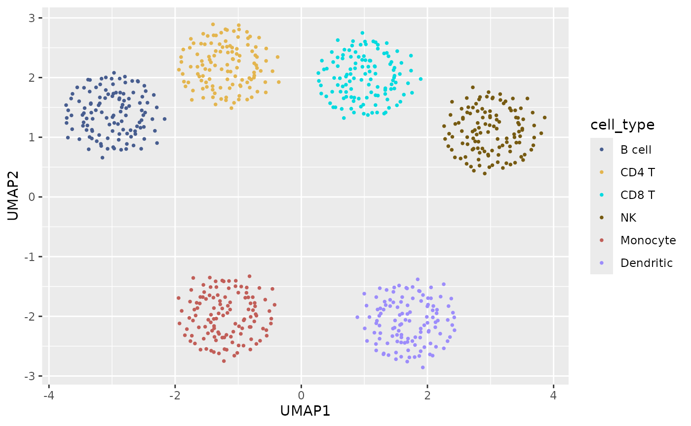
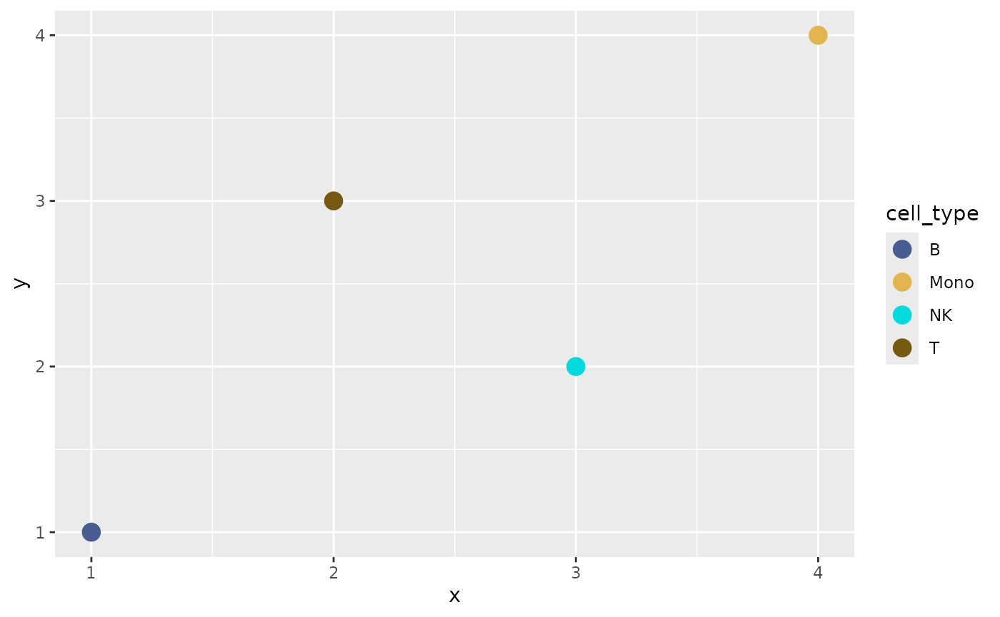

Define the mapping from the full annotation
labels_full <- c("B", "T", "NK", "Mono")
map <- sc_color_map(labels_full, palette = "chromatic")
as_named_colors(map)## B Mono NK T
## "#475D8F" "#E3B54E" "#00DADF" "#765A11"Subsets select names from the same object; they never rerun positional palette assignment.
labels_subset <- c("T", "NK")
subset_colors <- as_named_colors(map)[labels_subset]
stopifnot(identical(
subset_colors,
as_named_colors(map)[c("T", "NK")]
))Factor reordering also leaves the contract intact.
reordered <- factor(labels_full, levels = rev(labels_full))
as_named_colors(map)[levels(reordered)]## Mono NK T B
## "#E3B54E" "#00DADF" "#765A11" "#475D8F"Align colors for AnnData
AnnData stores categorical colors positionally in
.uns['<category>_colors']; that vector must use the
same order as the corresponding categorical levels. Keep the mapping
named in R, then select it in factor-level order immediately before
writing it to AnnData.
cell_type <- factor(labels_full, levels = c("T", "NK", "B", "Mono"))
ann_data_colors <- as_named_colors(map)[levels(cell_type)]
ann_data_colors## T NK B Mono
## "#765A11" "#00DADF" "#475D8F" "#E3B54E"unname(ann_data_colors) can be written to
.uns['cell_type_colors'] with zellkonverter, reticulate, or
another AnnData interface. If levels are reordered, repeat the indexed
as_named_colors(map)[levels(cell_type)] lookup rather than
reusing a positional vector. This keeps the AnnData colors aligned
without adding an AnnData dependency to scChromatic.
CELLXGENE also uses the cyclic d3_rainbow scheme as a
categorical fallback, but those assignments change with the category
count and order. For that reason, d3_rainbow is a
compatibility palette and is intentionally unavailable to
sc_color_map(); use a fixed qualitative palette for
persistent mappings.
Add a new annotation
updated <- update_sc_color_map(map, c(labels_full, "DC"))
stopifnot(identical(
as_named_colors(updated)[names(as_named_colors(map))],
as_named_colors(map)
))Hierarchy maps use the same append-only rule when they are extended
through sc_hierarchy_map(existing = ...). New parents and
children receive colors, while established child colors and parent
anchors remain unchanged.
hierarchy <- sc_hierarchy_map(
parent = c("Lymphoid", "Lymphoid", "Myeloid"),
child = c("B", "T", "Mono")
)
hierarchy_updated <- sc_hierarchy_map(
parent = c("Lymphoid", "Myeloid"),
child = c("NK", "DC"),
existing = hierarchy
)## Warning: Some hierarchy colors have weak CIE2000 separation (2.4).
stopifnot(identical(
as_named_colors(hierarchy_updated)[names(as_named_colors(hierarchy))],
as_named_colors(hierarchy)
))Derive context from coordinate neighborhoods
sc_relationship_map() accepts a symmetric affinity
matrix in [0, 1]. Affinities near one ask related labels to
use perceptually closer—but still distinct—colors; affinities near zero
ask unrelated labels to be farther apart. The optimizer fits
normal-vision CIE2000 distance to the supplied or derived affinity
target. A separate penalty uses the worst distance across normal,
deutan, protan, and tritan simulations by default, penalizing shortfalls
below that target in any requested view.
sc_relationship_from_knn() can derive the matrix from
coordinates. It builds an exact Euclidean k-nearest-neighbor graph
within each sample, symmetrizes label-to-label neighbor proportions, and
combines sample matrices with equal weight. A sample contributes to a
pair only when both labels are present; this pairwise-complete rule
prevents missing labels from being treated as evidence of separation. A
pair never observed together is an error unless
unobserved = "zero" explicitly makes that assumption. Use
aggregate = "median" instead of the default mean when a
median across contributing samples is more appropriate.
data(sc_example)
affinity <- sc_relationship_from_knn(
as.matrix(sc_example[c("UMAP1", "UMAP2")]),
labels = sc_example$cell_type,
sample = sc_example$sample,
k = 15,
aggregate = "mean"
)
canonical <- sc_color_map(sc_example$cell_type)
relationship_map <- sc_relationship_map(
affinity,
canonical = canonical,
locked = "B cell",
stability_budget = 1,
seed = 2026
)
as_named_colors(relationship_map)## B cell CD4 T CD8 T Dendritic Monocyte NK
## "#475D8F" "#E3B54E" "#00DADF" "#9C8CFB" "#C15E58" "#765A11"The bundled data expose UMAP-like coordinates, so they are used here
only to demonstrate the interface. UMAP does not preserve all
quantitative distances. For scientific neighborhood context, prefer
appropriately scaled PCA, a model-derived latent space, or spatial
coordinates, and report the preprocessing and k. Equal
sample weights prevent a larger sample from dominating, but do not by
themselves correct batch effects. Neighborhood affinities also depend on
label prevalence, local density, coordinate scaling, and k;
they should not be interpreted as direct evidence of biological
similarity. Stored provenance retains fingerprints and aggregate sample
summaries, not raw coordinates or sample identifiers.
Hard-locked labels never change. The stability budget is a separate
maximum on how many other canonical assignments may change; new labels
do not consume it. The output is an ordinary derived
sc_color_map, so the same scales and export functions
apply. Its context, history, and
metadata retain the method version, seed, requested CVD
modes, objective, normalized effective upper-triangle affinities,
canonical before/after colors, and changes. These records describe
construction and remain immutable if the map is subset. To add labels or
recalculate metrics for a subset, rerun
sc_relationship_map() with the corresponding matrix;
generic map extension is rejected because it would leave the stored
relationship input stale.
Add shape or pattern redundancy
Color need not carry the full annotation alone.
sc_redundant_encoding() finds pairs below a chosen
worst-vision CIE2000 distance across normal and requested CVD
simulations, then assigns different auxiliary encodings to those pairs.
The original colors are never changed.
encoding <- sc_redundant_encoding(
relationship_map,
channel = "shape",
min_cie2000 = 8
)
shape_values <- setNames(encoding$shape, encoding$label)
ggplot(sc_example, aes(UMAP1, UMAP2, color = cell_type, shape = cell_type)) +
geom_point(size = 1) +
scale_color_sc_map(relationship_map) +
scale_shape_manual(values = shape_values)
For geometries that can render texture, use
channel = "pattern" or channel = "both". The
returned pattern names are suitable for compatible pattern
layers, while texture_group is a generic group index for
texture systems such as scatterHatch. These integrations remain
optional; scChromatic does not require a pattern-rendering package. The
allocation is one-shot: create it for the full label universe and reuse
or subset the same table across figures. Rerunning after labels are
added or removed can change DSATUR priorities. RDS preserves the table’s
method and conflict attributes; ordinary CSV export does not.
Export and restore
JSON follows the installed versioned color-map schema. CSV keeps readable label/color rows and embeds the same complete JSON payload in one metadata row. Both formats preserve provenance and hierarchy, focus, alias, lock, history, context, and seed metadata. Legacy unversioned JSON and two-column CSV files are migrated when read; unknown future schema versions are rejected.
path <- tempfile(fileext = ".json")
write_sc_color_map(updated, path)
restored <- read_sc_color_map(path)
stopifnot(identical(as_named_colors(restored), as_named_colors(updated)))Plot and framework interoperability
dat <- data.frame(
x = seq_along(labels_full),
y = c(1, 3, 2, 4),
cell_type = labels_full
)
ggplot(dat, aes(x, y, color = cell_type)) +
geom_point(size = 4) +
scale_color_sc_map(map)
as_named_colors(map) is a plain named character vector.
It can be passed to Seurat manual scales, SingleCellExperiment plotting
code, ArchR color arguments, or
ComplexHeatmap::HeatmapAnnotation() without loading any of
those frameworks in scChromatic.